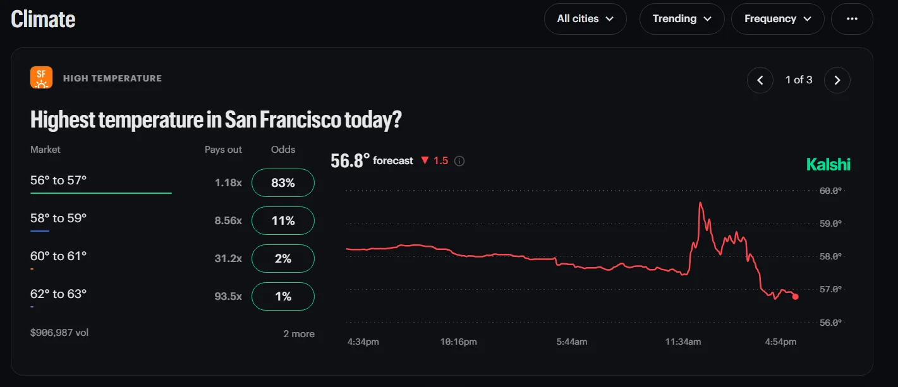
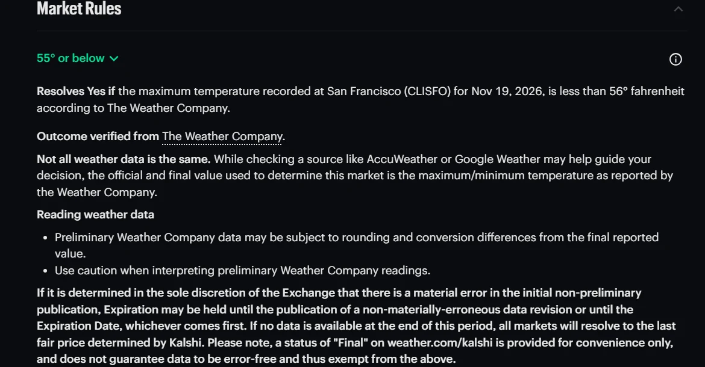
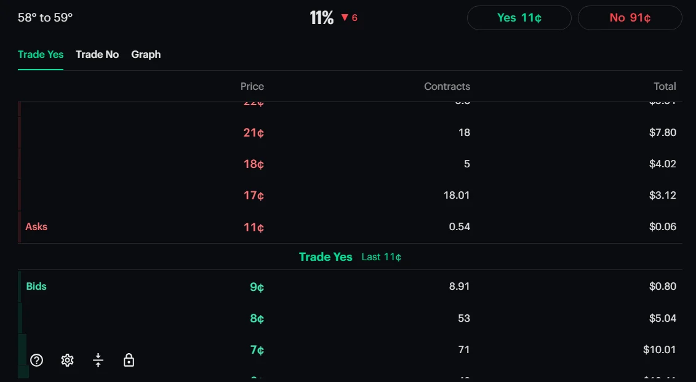
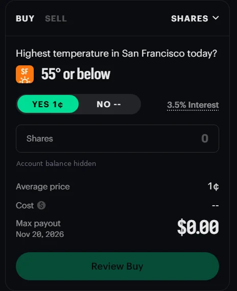
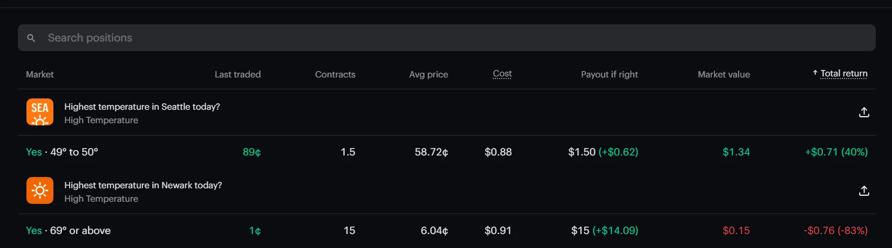
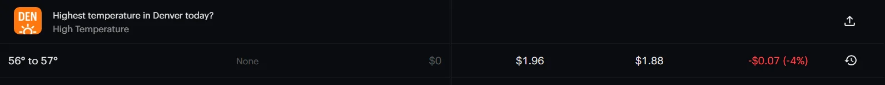
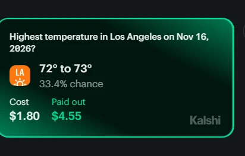

HOW TO TRADE KALSHI WEATHER MARKETS
Your first Kalshi temperature trade, step by step: how to find the market, what the numbers on the screen mean, how to place a small order, and exactly what decides whether you get paid. No jargon you don't need, and no promises.
KEY INSIGHTS
- A weather market is a yes-or-no question about one city's official high: will it land in this 2-degree range? Right pays $1 a contract; wrong pays $0.
- The price is the crowd's odds. A Yes at 36¢ means the market sees about a 36% chance.
- One station settles it, named in the market's rules. Your weather app doesn't count.
- Start tiny and use limit orders. The first weeks are tuition, so keep the bill small.
BEFORE YOUR FIRST TRADE
You need a Kalshi account, a small deposit, and about twenty minutes. Kalshi verifies your identity when you sign up, and availability can depend on where you live, so check its signup requirements first. Then deposit only what you'd be fine losing while you learn. Contracts cost cents, so a few dollars is enough to learn everything on this page with real stakes.
FIND A CITY'S DAILY-HIGH MARKET
In the Kalshi app or website, open the Climate section and look for markets titled "Highest temperature in [city] today?" There's one for each city Kalshi lists, every day. Each market asks the same thing: which range will that city's official high land in?
Pick one or two cities and stick with them. Learning one station's habits is worth more than skimming twenty.

READ THE RULES AND FIND THE STATION
Before anything else, open the market's rules and find the weather station it settles on. This is the most important twenty seconds of the whole trade. Each city settles on one specific station, and it's often not the one you'd guess: Chicago settles on Midway, not O'Hare; New York on Central Park, not JFK or LaGuardia; Los Angeles on LAX, not downtown.
The rules also name the source. Today that's The Weather Company, whose official high is taken from the National Weather Service's daily climate report for the station; the code in the rules, like CLISFO for San Francisco, names that report. Our settlement explainer walks through the full chain, and each of our city pages covers one station in depth.

READ THE BRACKET LADDER
The market is a ladder of temperature ranges, called brackets, each with its own price. Most brackets cover two degrees, like 82° to 83°. The ones at each end catch everything below or above. Exactly one bracket wins each day.
| What you see | What it means |
|---|---|
| 82° to 83° | The range you're betting on, in whole degrees. |
| Yes 36¢ | What it costs to bet the high lands in that range. Pays $1 if it does. |
| No 66¢ | What it costs to bet it doesn't. Pays $1 if the high lands anywhere else. |
| 36% chance | The Yes price read as odds: the crowd's estimate, not a forecast. |
Notice that Yes and No can add up to a little more than $1. That gap is the spread, part of what trading costs you. The cheap brackets are long shots for a reason; the expensive one in the middle is the crowd's favorite.

CHECK THE STATION BEFORE THE PRICE
Before you buy, look at what the settlement station has already recorded today. Three checks take a minute:
- The high so far. A daily high can only go up. If the station has already printed above your bracket, that bracket can't win, however cheap it looks.
- Where the day is. Most stations peak in the afternoon, but some peak early: LAX's median fall high comes before noon, and Miami's around 1 PM. A morning reading isn't the final answer.
- The forecast. A useful guide to where the day might end, not a promise.
Our free live dashboard tracks the exact settlement station for every city, and each city page shows its high so far, forecast and usual peak window.
13 of our AI scout's picks were already dead when it ran: an early-morning reading had already risen past the bracket it chose. All 13 lost. That one check would have saved every one of them.
One city, one screen
Pro puts a city's whole day in one place: 5-minute observations, every model's forecast path, projected bracket odds, the forecast digest and the peak-window clock. Free while we test it.
Open ProThe full daily system
This page is the what. The Playbook is the how: bracket selection, sizing, take-profits and the daily routine behind this desk's own trades, with the prompt templates for your AI agent.
See the PlaybookPLACE A SMALL LIMIT ORDER
Choose Yes or No, enter how many contracts you want, and set a limit price: the most you're willing to pay. Your cost is the price times the number of contracts, plus a small fee. That cost is also the most you can lose.
- Limit order: you name the price. It fills only at that price or better. If it rests on the book and fills later, it's a "maker" order, and on Kalshi's weather markets today makers pay no fee at all.
- Market order: it fills right away at whatever the best available price is, which can be worse than what you saw a second ago.
- Fees: a market (taker) order costs roughly 7% × price × (1 − price) per contract, rounded up, and peaks around 1.75¢ per contract at 50¢. Run your exact trade through our fee calculator first, and see Kalshi fees explained for the details.
A Yes on Central Park's 82° to 83° bracket, priced at about a 36% chance. Total cost: $3.76. The official high landed in the bracket, and it paid out $10.00, a $6.24 profit. Small ticket, clear rules, one official number.

MANAGE THE POSITION, OR LET IT RIDE
You can hold to settlement or sell any time before it, at the current bid. Decide which before you buy, not in the moment.
- Watch the bid, not the last price. The value your portfolio shows can be based on the last trade. The bid is what someone will actually pay you right now.
- A rising price isn't a result. A bracket can trade high in the afternoon and still settle at zero when the official high lands elsewhere.
- Don't add to a winner mid-day. Piling more in at worse prices turns a smart small bet into a big one.
One position showed "up 42%" on screen, based on the last trade. The price a buyer would actually pay was 24% under our cost. The screen wasn't lying; it was answering a different question.



CHECK THE SETTLEMENT THE NEXT MORNING
The market settles the morning after, once the station's first final climate report is published. Winning contracts pay $1 each, and losing ones pay nothing. The late-afternoon preliminary report never settles anything, and corrections published after expiration don't reopen a market.
Check the official high yourself, compare it with your bracket, and write down what happened and why. If a result surprises you, our page on why Kalshi weather bets lose covers the seven usual reasons.

A SIMPLE FIRST WEEK
- Days 1–2: watch. Follow two cities' stations on the dashboard while the Kalshi prices move. Notice when they disagree.
- Days 3–4: paper trades. Write down the bracket you'd buy and why, then check the official result the next morning.
- Days 5–7: smallest real money. If your notes make sense, place one or two tiny limit orders.
- Weekend: review. What fooled you? The chart, your app, a late spike? That's your real education.
That's how our own desk works too, in public: every trade is graded the next morning and published in our trading journal, losers included.
QUESTIONS BEGINNERS ASK
How do you trade weather on Kalshi?
Pick a city's daily-high market, read its rules to find the settlement station, look at the bracket ladder, and buy Yes or No on a temperature range. Each contract pays $1 if you're right and $0 if you're wrong, settled on the official high from the station's daily climate report.
How much money do I need to start trading Kalshi weather markets?
Very little. Contracts are priced in cents, so a beginner can trade a few dollars at a time. Start with an amount you'd shrug at losing, because every contract can go to zero.
What does the price of a Kalshi weather contract mean?
The price in cents is roughly the market's estimate of the chance that range wins. A Yes at 36¢ means the market sees about a 36% chance; if it wins, each contract pays $1.
Should I use a limit order or a market order on Kalshi?
A limit order sets the most you'll pay, so you never buy at a surprise price, and on weather markets a limit order that rests on the book and fills later currently pays no fee. A market order fills right away at the best price available, which can be worse than the price you saw.
Can I sell a Kalshi weather contract before it settles?
Yes. You can sell at any time the market is open, at the current bid. The bid is what a buyer will pay right now, which can be well below the last traded price.
When do Kalshi weather markets pay out?
The morning after the trading day, once the first final climate report for the station is published. Winning contracts pay $1 each; losing contracts pay nothing.
Trade with the full picture
The settlement station's 5-minute readings, every model, projected bracket odds and the peak-window clock, one city at a time.
Open ProGo from first trade to a routine
The daily system behind this desk: how we pick brackets, size positions and take profits, plus the prompt templates to run it with your AI agent.
See the PlaybookEducation only, not financial advice. Kalshi markets involve risk, including losing your entire stake. Nothing here is a promise of profit; past results, including ours, do not predict future ones. Paper trades are simulated and labeled wherever they appear.